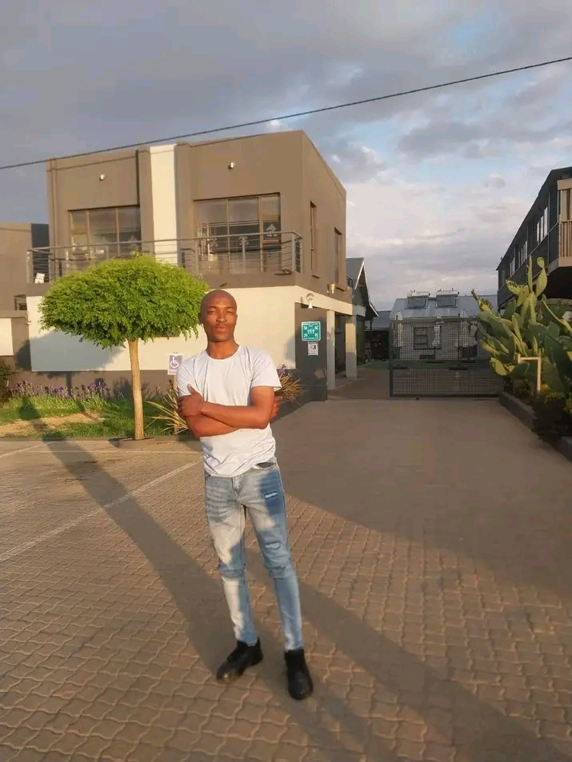
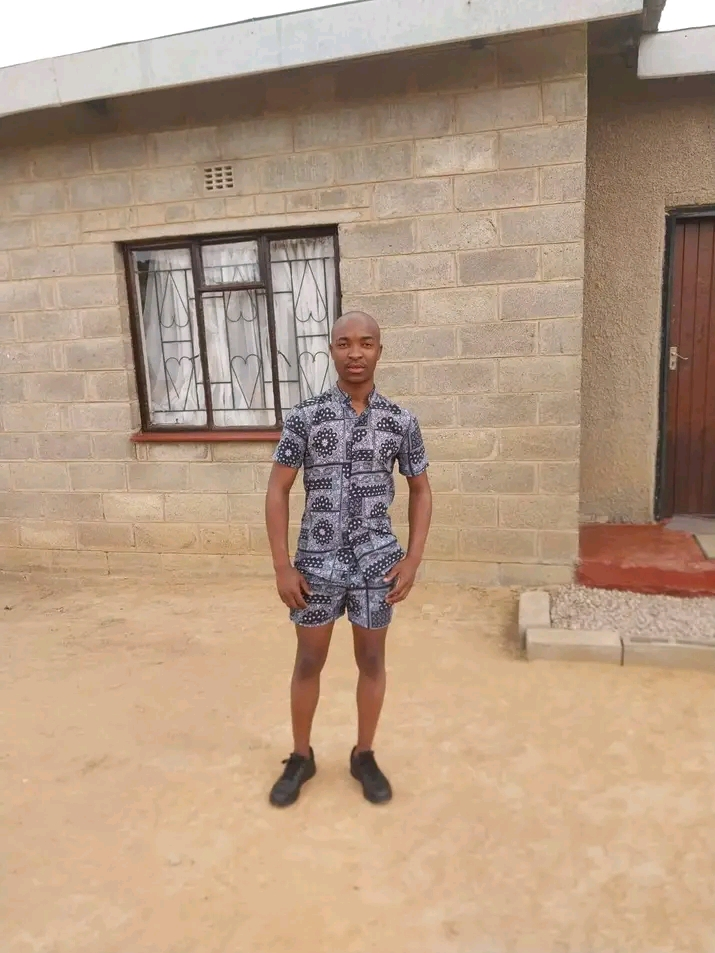
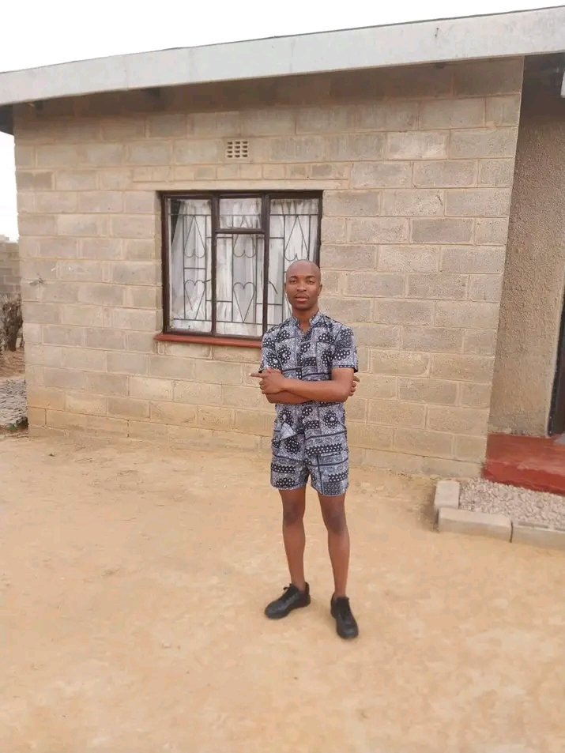

what I understand now
I’ve been thinking a lot… and for the first time,
I’m not avoiding my part in everything.

you
You’re strong in a way that isn’t loud.
And you deserve to be seen.


things I noticed
• You carry more than people realize
• You notice effort
• You just needed support
• You notice effort
• You just needed support
no pressure
I’m not expecting anything.
I just needed to say this properly.
I just needed to say this properly.
my apology
MY HABIBI
I’ve been doing a lot of thinking, and one thing I’ve realized is that I didn’t take enough responsibility for how I showed up with you. I can see now that I wasn’t as emotionally supportive or understanding as I should’ve been, and I understand why that hurt you.
You’re someone who notices things, who feels things, and who expects honesty and accountability and I didn’t meet you there. Its all my fault. At the same time, I see you more clearly now. I see how strong you’ve been, especially with everything going on around you. Even when things aren’t right, you still carry yourself in a way that stands out. I don’t think I ever really said that properly before.
You didn’t deserve to feel ignored or unsupported by me. You deserved someone who actually saw you and responded with care, and I regret that I didn’t do that the way I should have. I’m not sending this to force anything or expect a reply. I just wanted to finally acknowledge you properly, and take responsibility for all my wrong doings.
Kea tseba its too late but im working on myself to become a better person. i regret everyday for everything i did that hurt you. Ke soabile fela le hore i never saw the signs that you needed me more than ever and kao etsa wi kutloe ole a villain ke kopa u ntshoarele.
And I’m very sorry, Sano.
I’ve been doing a lot of thinking, and one thing I’ve realized is that I didn’t take enough responsibility for how I showed up with you. I can see now that I wasn’t as emotionally supportive or understanding as I should’ve been, and I understand why that hurt you.
You’re someone who notices things, who feels things, and who expects honesty and accountability and I didn’t meet you there. Its all my fault. At the same time, I see you more clearly now. I see how strong you’ve been, especially with everything going on around you. Even when things aren’t right, you still carry yourself in a way that stands out. I don’t think I ever really said that properly before.
You didn’t deserve to feel ignored or unsupported by me. You deserved someone who actually saw you and responded with care, and I regret that I didn’t do that the way I should have. I’m not sending this to force anything or expect a reply. I just wanted to finally acknowledge you properly, and take responsibility for all my wrong doings.
Kea tseba its too late but im working on myself to become a better person. i regret everyday for everything i did that hurt you. Ke soabile fela le hore i never saw the signs that you needed me more than ever and kao etsa wi kutloe ole a villain ke kopa u ntshoarele.
And I’m very sorry, Sano.